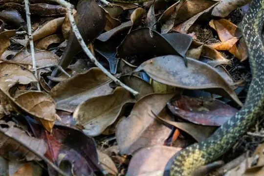
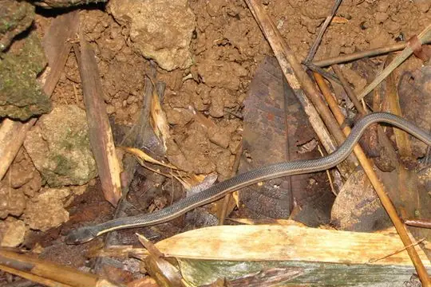

Thamnosophis
The genus Thamnosophis (family Pseudoxyrhophiidae) has 6 living species in SnakeList (none venomous), recorded in 1 country.
- 6living species
- 6non-venomous
- 1country
About the genus
A genus of the family Pseudoxyrhophiidae (Malagasy snakes and allies).
Species
Showing 6 species
- No photo yetAntsiranana Water SnakeThamnosophis martae

Eastern Madagascar Water SnakeThamnosophis epistibes Forest Water SnakeThamnosophis infrasignatus
Forest Water SnakeThamnosophis infrasignatus Lateral Water SnakeThamnosophis lateralis
Lateral Water SnakeThamnosophis lateralis
Yellow-striped Water SnakeThamnosophis stumpffi- No photo yetYellow-throated Water SnakeThamnosophis mavotenda
No snakes in Thamnosophis match.
About the genus Thamnosophis
- Distribution: living species recorded in 1 country, on one continent: Africa.
- Family: Pseudoxyrhophiidae.
- Countries and territories: Madagascar.
Compare its species
Its living species side by side. Lengths come only from SnakeList’s reviewed, sourced accounts; the others are left blank rather than guessed.
| Species | Venom | Recorded in | Adult length (reviewed accounts) |
|---|---|---|---|
| Antsiranana Water Snake Thamnosophis martae | Non-venomous | 1 country (Africa) | No reviewed account yet |
| Eastern Madagascar Water Snake Thamnosophis epistibes | Non-venomous | 1 country (Africa) | No reviewed account yet |
| Forest Water Snake Thamnosophis infrasignatus | Non-venomous | 1 country (Africa) | No reviewed account yet |
| Lateral Water Snake Thamnosophis lateralis | Non-venomous | 1 country (Africa) | No reviewed account yet |
| Yellow-striped Water Snake Thamnosophis stumpffi | Non-venomous | 1 country (Africa) | No reviewed account yet |
| Yellow-throated Water Snake Thamnosophis mavotenda | Non-venomous | 1 country (Africa) | No reviewed account yet |